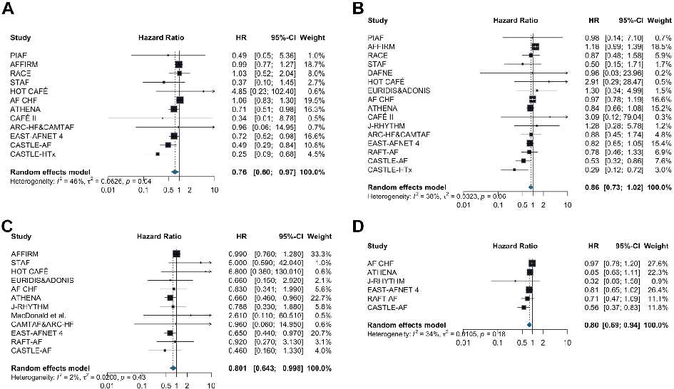
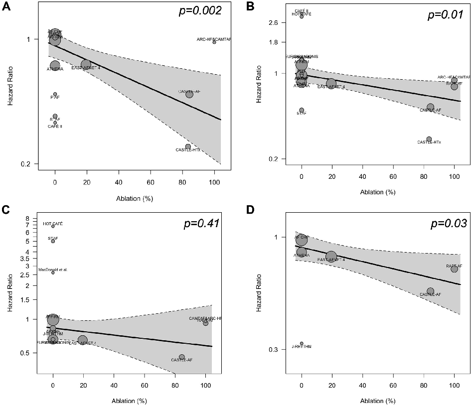
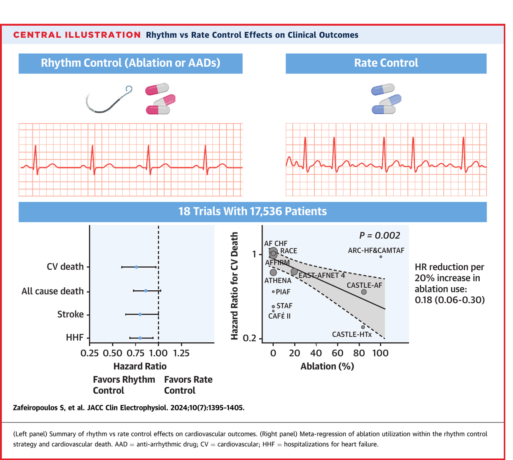
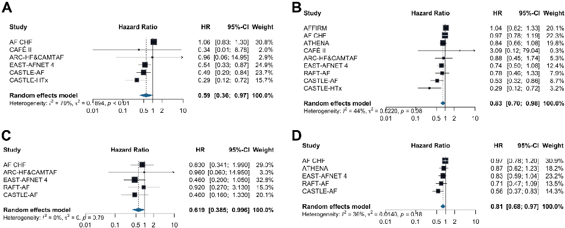

本ページで使用する略語一覧
| 略語 | 正式名称 — 日本語訳 |
| AF | Atrial Fibrillation — 心房細動 |
| AAD | Antiarrhythmic Drug — 抗不整脈薬 |
| CV | Cardiovascular — 心血管 |
| HF | Heart Failure — 心不全 |
| HHF | Hospitalization for Heart Failure — 心不全入院 |
| RCT | Randomized Controlled Trial — ランダム化比較試験 |
| SR | Sinus Rhythm — 洞調律 |
| HR | Hazard Ratio — ハザード比 |
| CI | Confidence Interval — 信頼区間 |
| RR | Risk Ratio — リスク比 |
| PRISMA | Preferred Reporting Items for Systematic Reviews and Meta-Analyses — 系統的レビュー報告指針 |
SECTION 1 なぜ今、改めてリズム vs レートを問い直すのか
歴史的文脈と問題提起
心房細動（AF）は最も頻度の高い不整脈であり、著しい罹患率と医療負担をもたらす疾患だ。洞調律（SR）の維持が生存率の改善と関連することは以前から示されてきた一方で、リズムコントロールがレートコントロールに対して臨床アウトカムで優れているかどうかは長年結論が出なかった。
歴史的には、抗不整脈薬（AAD）の安全性プロファイルの悪さが、CV死・脳卒中・心不全悪化といった主要有害心血管イベントの予防に対するリズムコントロールの有益効果を相殺していたと考えられる。過去のメタ解析はリズムコントロールの生存率改善を示せず、むしろレートコントロールで入院リスクが低いとする結果さえあった。
しかし近年、新世代AADとカテーテルアブレーション技術の進歩により、SRの維持がより安全に実現できるようになった。特に早期リズムコントロール（とりわけアブレーション）がAFの進行を遅らせ、長期的な臨床アウトカムを改善する可能性を示す新たなエビデンスが蓄積されてきた。本論文はこうした時代背景を受け、最新の包括的メタ解析としてリズム vs レートコントロールの優劣を問い直したものである。
SECTION 2 研究デザインと対象・方法
方法の概要
MEDLINE、CENTRAL（Cochrane）、Web of Science を対象に、2023年11月末までに登録されたRCTを系統的に検索した（PRISMAガイドライン準拠）。
| 項目 | 基準 |
|---|---|
| 対象 | 非弁膜症性AFを有する成人患者のRCT |
| リズムコントロール | AAD（Ia・Ic・III群）、カテーテルアブレーション、電気的除細動 |
| レートコントロール | β遮断薬、ジゴキシン、カルシウム拮抗薬 |
| 除外 | 同戦略内の薬剤比較（例：アブレーション vs AAD）、永続性AF |
| 主要エンドポイント | 心血管（CV）死 |
| 副次評価項目 | 全死亡・脳卒中・心不全入院・フォローアップ終了時SR率・有害事象 |
統計手法として、DerSimonian-Laird法によるランダム効果モデルを事前設定し、HR（ハザード比）で効果量を推定した。時間的傾向を評価するため累積メタ解析を実施し、アブレーション使用割合を説明変数とするメタ回帰分析も行った。
組み入れ試験の概要
18のRCT（主試験）と7のサブスタディが最終的に組み入れられた。以下は代表的な試験の特徴をまとめた一覧である。
| 試験名（年） | リズムコントロール | N | 追跡 （月） |
HF % | 主な結果 |
|---|---|---|---|---|---|
| CASTLE-HTx 2023 | アブレーション | 194 | 18 | 100 | HR: 0.24; P<0.001 |
| EAST-AFNET4 2020 | 各種AAD | 2,789 | 61.2 | 28.6 | HR: 0.79; P=0.005 |
| CASTLE-AF 2018 | アブレーション | 398 | 37.6 | 100 | HR: 0.62; P=0.006 |
| RAFT-AF 2022 | アブレーション | 411 | 37.6 | 100 | HR: 0.71; P=0.066（NS） |
| AF-CHF 2008 | アミオダロン | 1,376 | 37 | 100 | 有意差なし |
| AFFIRM 2002 | 各種AAD | 4,060 | 42 | NR | 全死亡：有意差なし |
| ATHENA 2009 | ドロネダロン | 4,628 | 21 | NR | HR: 0.76; P<0.001 |
| RACE 2002 | 各種AAD | 522 | 27.6 | 0 | 非劣性（レートコントロールが優位傾向） |
NR = not reported。HF % = HF合併患者の割合。追跡は中央値または平均値（月）。
アブレーション使用割合
SECTION 3 主要・副次評価項目
リズムコントロールの臨床アウトカムへの影響
13試験・14,793例でCV死が報告された。リズムコントロールはレートコントロールと比較して、CV死を有意に減少させた（HR: 0.78; 95%CI: 0.62–0.96）。全死亡（HR: 0.86; 95%CI: 0.73–1.02）については有意差を認めなかったが、脳卒中（HR: 0.801; 95%CI: 0.643–0.998）と心不全入院（HR: 0.80; 95%CI: 0.69–0.94）はともにリズムコントロール群で有意に少なかった。全死亡に有意差が出なかった主な理由として、非心血管系死亡による競合リスクが考えられる。
| アウトカム | 試験数 / 症例数 | HR（95%CI） | 解釈 |
|---|---|---|---|
| CV死亡（主要） | 13試験 / 14,793例 | 0.78（0.62–0.96） | リズムコントロールが優位 |
| 全死亡 | 17試験 / 17,422例 | 0.86（0.73–1.02） | 有意差なし（NS） |
| 脳卒中 | 13試験 / 16,235例 | 0.801（0.643–0.998） | リズムコントロールが優位 |
| 心不全入院（HHF） | 6試験 / 10,390例 | 0.80（0.69–0.94） | リズムコントロールが優位 |
| フォロー終了時SR | — | RR: 3.19（2.12–4.79） | リズムコントロールで有意に高い |
（95%CI: 0.62–0.96）
（95%CI: 0.643–0.998）
（95%CI: 0.69–0.94）
（NS、0.73–1.02）
（95%CI: 2.12–4.79）
Figure 2：フォレストプロット — 各アウトカム
（A）CV死亡、（B）全死亡、（C）脳卒中、（D）心不全入院のフォレストプロット。

SECTION 4 安全性アウトカム
AAD vs アブレーションの安全性比較
安全性に関しては、AADはレートコントロールと比較して有害事象が有意に多かった（RR: 1.46; 95%CI: 1.11–1.91）。一方、カテーテルアブレーションの手技合併症率は7.7%（95%CI: 3.8–11.6）であった。これらの知見は、AADではなくアブレーションを主体としたリズムコントロールの有用性をさらに支持するものである。
（vs レートコントロール
95%CI: 1.11–1.91）
手技合併症率
（95%CI: 3.8–11.6）
SECTION 5 累積メタ解析：「時間依存性効果」
最近の試験がアウトカムを牽引している
累積メタ解析では、CV死亡に対するリズムコントロールの有意性は、試験を時系列順に累積した場合、第11番目の試験を加えた時点で初めて統計的有意性に達した。一方、逆時系列順（新しい試験から追加）では第1番目の試験のみで有意性が確認された。脳卒中においても同様のパターンが認められた。
さらにメタ回帰分析では、試験の発表年（P=0.02 for CV死、P=0.0004 for 全死亡、P=0.04 for 脳卒中）との間に有意な線形相関が認められた。これらのデータは、リズムコントロールの有効性が「時間依存性」であることを示しており、近年のEAST-AFNET4・CASTLE-AF・RAFT-AFといった試験が結果全体を主導していることを意味する。
SECTION 6 アブレーション使用率が高いほど転帰は改善する
メタ回帰分析：アブレーション割合とCV死の関係
リズムコントロール群中のアブレーション使用割合は、CV死（P=0.02）、全死亡（P=0.01）、心不全入院（P=0.03）のリスク低下と線形的に相関していた。アブレーション使用割合が20%増加するごとに、CV死に対するHRは0.18（95%CI: 0.06–0.30）低下した。一方、脳卒中との相関は認められなかった（P=0.4）。
脳卒中でアブレーションの割合増加効果が認められなかった理由として、抗凝固療法の普及がリズムコントロール戦略の種類によらず脳卒中予防に大きく貢献している可能性が挙げられている。すなわち抗凝固療法はAAD・アブレーションに関わらず一貫して継続すべきであることを示唆する。
CV死HR低下幅
（95%CI: 0.06–0.30）
の相関（メタ回帰）
の相関（メタ回帰）
Figure 3：バブルプロット — アブレーション割合とHR
（A）CV死、（B）全死亡、（C）脳卒中、（D）心不全入院。黒線がメタ回帰線、網掛けが95%CI。


右：リズムコントロール群中のアブレーション割合（%）と CV 死 HR の散布図。アブレーション使用割合が高い試験ほど CV 死 HR が低い傾向（P=0.002、HR reduction per 20% increase in ablation use: 0.18（95%CI: 0.06–0.30））。
SECTION 7 心不全合併AFサブグループ
HF合併例ではリズムコントロールの恩恵が一層大きい
AFはHFの強力な予後規定因子であり、特に集中的な管理が必要な集団である。HF合併サブグループにおいて、リズムコントロールはCV死亡（HR: 0.59; 95%CI: 0.36–0.97）、全死亡（HR: 0.83; 95%CI: 0.70–0.98）、脳卒中（HR: 0.619; 95%CI: 0.385–0.996）、心不全入院（HR: 0.81; 95%CI: 0.68–0.97）のすべてにおいて有意な改善を示した。
全体集団では有意差に至らなかった全死亡においても、HF合併例では有意な差が生じていることは重要な知見である。これはリズムコントロールがHF管理の主要な柱になり得ることを示唆する。ただしHF合併例に対するアブレーションの最適対象（EF分画・症状重症度）については今後の検討課題である。
| アウトカム | HR（95%CI） | 有意性 |
|---|---|---|
| CV死亡 | 0.59（0.36–0.97） | 有意 |
| 全死亡 | 0.83（0.70–0.98） | 有意（全体とは異なり有意） |
| 脳卒中 | 0.619（0.385–0.996） | 有意 |
| 心不全入院 | 0.81（0.68–0.97） | 有意 |
Figure 4：HF合併サブグループのフォレストプロット
（A）CV死、（B）全死亡、（C）脳卒中、（D）心不全入院。

（95%CI: 0.36–0.97）
（95%CI: 0.70–0.98）
（95%CI: 0.68–0.97）
SECTION 8 AF病型別サブグループ（発作性 vs 持続性）
発作性・持続性でCV死のHRに有意差なし
AF病型別のサブグループ解析では、発作性AF（HR: 0.88; 95%CI: 0.68–1.13）と持続性AF（HR: 0.84; 95%CI: 0.54–1.25）の間にCV死への効果の差は認められなかった（サブグループ間交互作用 P=0.86）。すなわちリズムコントロールの有益効果は、AF病型にかかわらず一貫している可能性がある。
SECTION 9 考察の要点
「なぜアブレーションが優れているのか」の臨床解釈
カテーテルアブレーションはAADと比較してSR維持と死亡率改善に関して優れていることが以前から示されてきた。本研究でも、リズムコントロール群中のアブレーション使用割合がCV死・全死亡・HHFのリスク低下と線形に相関した。一方でRAFT-AFはアブレーション vs レートコントロールを直接比較した唯一の大規模試験だが、早期中止のため検出力が低く非有意に終わっている。
また、CASTLE-AFのポストホック解析では、薬物によるリズムコントロールはレートコントロールと比較して全死亡・HHFを改善しなかった一方、アブレーションによるリズムコントロールでは改善が認められた。これらのエビデンスはまとめて、「リズムコントロール」という概念の中でもアブレーションの位置づけが特別に高いことを示す。
早期リズムコントロールについての解釈
EAST-AFNET4試験は、症状の有無にかかわらずAF発症早期のリズムコントロールが有益であることを示した。しかし、AFFIRM試験のポストホック解析では、AF診断から6か月以内の早期リズムコントロールが転帰改善に結びついていないという結果も存在する。これらを総合すると、最近の試験でリズムコントロールが優れた結果を示した理由は、「介入のタイミング」よりも「AF治療の質的向上（より安全なAAD、アブレーション技術の進歩）」によるところが大きいと著者らは結論づけている。
CV死とHHFのエビデンスの質は「中等度（moderate）」（バイアスリスクと異質性によりダウングレード）。全死亡と脳卒中は「高い（high）」。SR維持と有害事象は「低い（low）」（バイアスリスクと異質性によりダウングレード）。出版バイアスは全アウトカムで認められなかった（P>0.05）。
SECTION 10 研究の限界
解釈上の注意点
| 限界 | 内容 |
|---|---|
| 実用的試験デザイン | 多くの試験がPragmaticデザインで各種AADの選択を許容しており、クロスオーバーも存在した |
| CASTLE-AF/HTxの医療腕 | 純粋なレートコントロール群ではなくリズムコントロール戦略を行う患者も含まれていた |
| HFサブグループの定義 | 研究によってHFの定義（EF低下に限定 vs 全スペクトラム）が異なり、サブグループデータを含む因果解釈には限界がある |
| 累積メタ解析の限界 | 反復テストによる第一種過誤膨張の可能性があり、また個人レベルデータではなくサマリーデータに基づく |
SUMMARY キーメッセージ（5項目）
出典：Zafeiropoulos S, et al. Rhythm vs Rate Control Strategy for Atrial Fibrillation: A Meta-Analysis of Randomized Controlled Trials. JACC Clin Electrophysiol. 2024;10(7):1395–1405.
DOI：https://doi.org/10.1016/j.jacep.2024.03.006
本資料は教育目的で作成したサマリーです。診断・治療方針の決定には必ず原典論文を参照してください。
制作：ICU 関谷